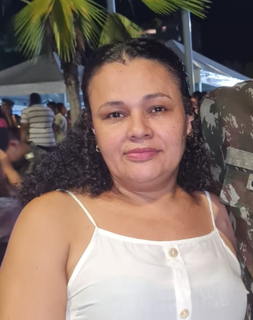

Sobre Mim
Meu nome é Lidiane da Cunha Neves, tenho 46 anos e nasci em 04 de dezembro de 1979. Minha trajetória profissional começou na área da saúde, onde me formei como técnica em enfermagem, uma experiência que me ensinou muito sobre responsabilidade, dedicação e cuidado com as pessoas.
Atualmente, estou em um novo momento da minha vida: sou estudante do curso de Sistemas para Internet pelo polo Lagoa Alegre da UAPI, vinculado à UESPI. Decidi ingressar na área de tecnologia por enxergar nela um grande potencial de crescimento e novas oportunidades profissionais.
Tenho me dedicado aos estudos e ao desenvolvimento de novas habilidades, especialmente na área de desenvolvimento web. Estou em processo de transição de carreira e motivada a construir uma nova trajetória na tecnologia, sempre aberta a aprender e evoluir.